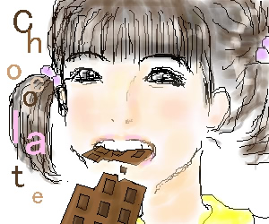

September.2002
私にとって秋とは『チョコレートの秋』と言えます！
次々出てくる新商品にうっとりしながら、少しずつ全てを制覇して行くのです♪
最初は舞のつもりで描いていたのですが、どうしてもあの笑顔が描けなくて…。
何度も描き直していると、だんだん目がありちゃんに似てきました。
前髪をパッツンにすると…ありちゃん！
ってことで（笑）急遽ありちゃんになりました。
どうせなら、と日頃ありちゃんは絶対しないであろう、お行儀の悪い食べ方をさせてみたり。
エンディングで一目惚れの髪型にしてみました♪